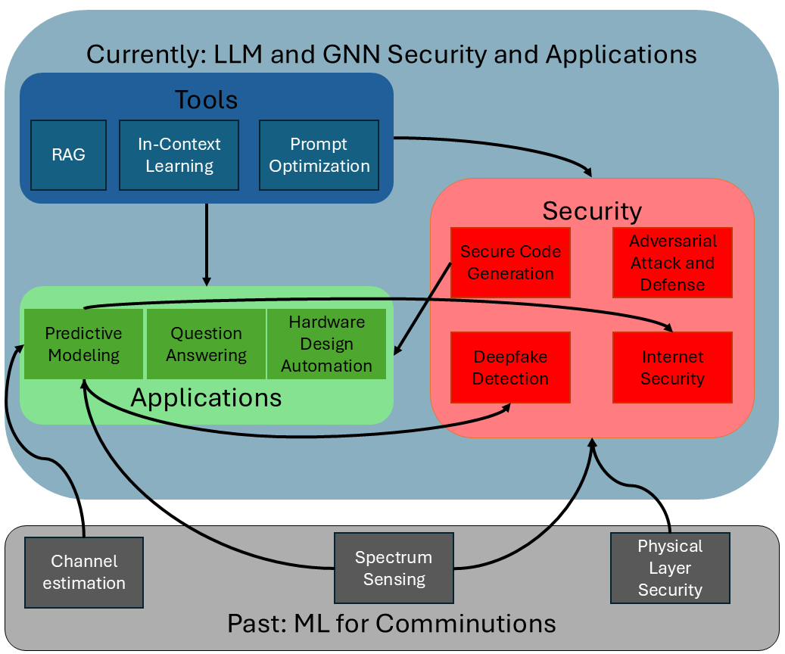

About Me
I am an incoming Assistant Professor in the Computer Science department at Old Dominion University, specializing in AI Security and Applications. My research focuses on the security, robustness, and applicability of Graph Neural Networks (GNNs) and Large Language Models (LLMs).
My goal is to advance AI security technologies that enhance trust and reliability in the systems we depend on today and in the future. Overall, I have contributed to more than 20 conference papers, 12 journal papers, 7 patent applications, and 1 book chapter, and have lectured undergraduate computer engineering courses at NJIT and in universities in Turkey and the UAE.
Research Interests
- Currently: Security and robustness of GNNs and LLMs
- Adversarial robustness and prompt optimization
- Applications in secure code generation, hardware design automation, and internet security
- Previously: Machine learning for communications (e.g., physical layer security, channel estimation, spectrum sensing)
Education
Ph.D. in Computer Engineering
NJIT, 2021 – 2025
M.Sc. in Electrical and Electronic Engineering
Eastern Mediterranean University, 2010
B.Sc. in Electrical Engineering
Birzeit University, 2009
Research Interests Overview
This visualization summarizes my research areas, from past work in machine learning for communication to current interests in AI security and robustness, including secure code generation, deepfake detection, and adversarial attacks.
Professional Experience
-
Teaching Assistant, New Jersey Institute of Technology, Newark, NJ, USA (2021 – Present)
- Research on GNNs and LLMs for secure code generation.
- Lectured courses in computer engineering.
-
Lecturer, Abu Dhabi Vocational Education and Training Institute, Abu Dhabi, UAE (2019 – 2021)
- Taught undergraduate electrical engineering courses.
- Supervised student projects.
-
Lecturer, Izmir University of Economics, Izmir, Turkey (2016 – 2017)
- Taught courses in electrical engineering.
- Guided graduation projects.